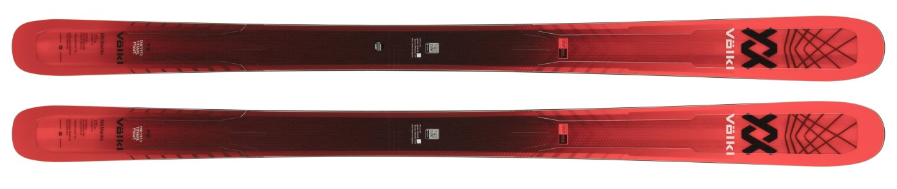
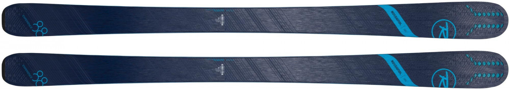
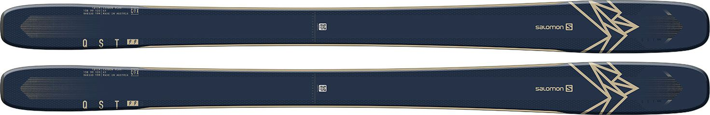
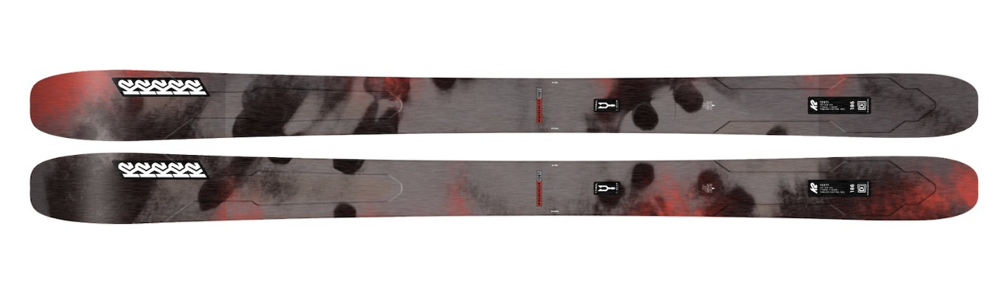

<!DOCTYPE html>
<html lang="en">
<head>
    <meta charset="UTF-8">
    <meta name="viewport" content="width=device-width, initial-scale=1.0">
    <link rel="stylesheet" href="styles.css">
    <title>Website design project</title>
</head>
<body>

    
</body>
</html>

<style>
  body {
    font-family: Arial, sans-serif;
    margin: 0;
    padding: 0;
    background-color: #f7f7f7;
  }
  
  .navbar {
    display: flex;
    justify-content: center;
    background-color: #333;
    padding: 15px;
    position: fixed;
    top: 0;
    width: 100%;
    z-index: 1000;
    box-shadow: 0 4px 8px rgba(0, 0, 0, 0.2);
  }

  .navbar a {
    color: white;
    text-decoration: none;
    margin: 0 20px;
    font-size: 18px;
    text-transform: uppercase;
    letter-spacing: 1px;
    position: relative;
    padding: 10px 0;
    transition: color 0.3s ease, transform 0.3s ease;
  }

  .navbar a::before {
    content: "";
    position: absolute;
    bottom: 0;
    left: 50%;
    width: 0;
    height: 2px;
    background-color: #fcfcfc;
    transition: width 0.3s ease, left 0.3s ease;
    transform: translateX(-50%);
  }

  .navbar a:hover {
    color: #f4f4f4;
    transform: scale(1.1);
  }

  .navbar a:hover::before {
    width: 100%;
    left: 10;
  }

  .navbar a.active {
    background-color: #444;
    padding: 15px 20px;
    border-radius: 4px;
  }

  .navbar a:nth-child(odd) {
    animation: slideIn 0.5s ease-out 0.3s forwards;
  }

  .navbar a:nth-child(even) {
    animation: slideIn 0.5s ease-out 0.5s forwards;
  }

  @keyframes slideIn {
    from {
      opacity: 0;
      transform: translateY(-20px);
    }
    to {
      opacity: 1;
      transform: translateY(0);
    }
  }

  .navbar:hover {
    background-color: #444;
    transition: background-color 0.3s ease;
  }
</style>
</head>
<body>

  <div class="navbar">
    <a href="Index.html" class="nav-link">Home</a>
    <a href="resorts.html" class="nav-link">Resorts</a>
    <a href="skigear.html" class="nav-link">Gear</a>
    <a href="skitips.html" class="nav-link">Tips & Tricks</a>
    <a href="skinews.html" class="nav-link">News</a>
  </div>

<script>
  const navLinks = document.querySelectorAll('.nav-link');
  
  navLinks.forEach(link => {
    link.addEventListener('click', () => {
      navLinks.forEach(item => item.classList.remove('active'));
      link.classList.add('active');
    });
  });
</script>

<div class="hero-image">
  <video autoplay loop muted playsinline class="background-video">
    <source src="Images/skigearvideo.mp4" type="video/mp4">
  </video>
  <div class= "hero-text">
    <h1>Ski Gear</h1>
    <p>Our top reccomendations</p>
  </div>
</div>

<style>
  body {
      font-family: Arial, sans-serif;
      line-height: 1.6;
      margin: 0;
      padding: 0;
      background-color: #f4f4f4;
  }

  .container {
      max-width: 1200px;
      margin: 20px auto;
      padding: 20px;
      background-color: white;
      box-shadow: 0 4px 8px rgba(0, 0, 0, 0.1);
  }

  h1 {
      text-align: center;
  }

  .ski-list {
      list-style: none;
      padding: 0;
  }

  .ski-item {
      display: flex;
      flex-direction: column;
      margin-bottom: 20px;
      background-color: #f9f9f9;
      padding: 20px;
      border-radius: 8px;
      box-shadow: 0 2px 4px rgba(0, 0, 0, 0.1);
  }

  .ski-item h2 {
      color: #2c3e50;
      margin-bottom: 10px;
  }

  .ski-item p {
      color: #555;
      margin-bottom: 8px;
  }

  .ski-item .features {
      margin-top: 10px;
      color: #2ecc71;
  }

  .ski-item .key-features {
      list-style: none;
      padding-left: 20px;
  }

  .ski-item .key-features li {
      color: #555;
      margin: 5px 0;
  }

  .ski-item img {
      max-width: 100%;
      height: auto;
      border-radius: 8px;
      margin-bottom: 15px;
      transition: transform 0.3s ease, box-shadow 0.3s ease;
      object-fit: cover;
  }

  .ski-item img:hover {
      transform: scale(1.05);
      box-shadow: 0 4px 12px rgba(0, 0, 0, 0.2);
  }

  .container {
      box-shadow: 0 8px 16px rgba(0, 0, 0, 0.1);
  }

  .ski-item .text-content {
      padding-left: 20px;
      padding-right: 20px;
  }

  @media (max-width: 768px) {
      .ski-item {
          margin-bottom: 15px;
          padding: 15px;
      }

      h1 {
          font-size: 24px;
      }

      .ski-item img {
          margin-bottom: 10px;
      }
  }
</style>
</head>
<body>

<div class="container">
  <h1>Our Top 5 Skis for 2025</h1>
  <ul class="ski-list">
      <li class="ski-item">
          
          <div class="text-content">
              <h2>Volkl Mantra M6</h2>
              <p><strong>Best for:</strong> <br>All-mountain skiers</p>
              <p><strong>Why it's great:</strong> <br>The Volkl Mantra M6 is a versatile, high-performance ski that excels both on and off-piste. With a full wood core and Titanal frame, it provides excellent stability, edge grip, and responsiveness. Ideal for skiers who want to tackle varied terrain with precision.</p>
              <div class="features">
                  <p><strong>Key Features:</strong></p>
                  <ul class="key-features">
                      <li>96mm waist</li>
                      <li>Rocker-camber-rocker profile</li>
                      <li>Titanal frame</li>
                      <li>3D Radius Sidecut</li>
                  </ul>
              </div>
          </div>
      </li>

      <li class="ski-item">
          
          <div class="text-content">
              <h2>Rossignol Experience 88 Ti</h2>
              <p><strong>Best for:</strong> <br>Intermediate to advanced skiers</p>
              <p><strong>Why it's great:</strong> <br>This ski blends the best of carving precision with all-mountain capability. Its titanium reinforcement adds strength and power, while the Air Tip VAS technology helps with vibration dampening for a smoother ride.</p>
              <div class="features">
                  <p><strong>Key Features:</strong></p>
                  <ul class="key-features">
                      <li>88mm waist</li>
                      <li>Carbon Alloy Matrix</li>
                      <li>Progressive Sidecut</li>
                      <li>All-Terrain Rocker</li>
                  </ul>
              </div>
          </div>
      </li>

      <li class="ski-item">
          
          <div class="text-content">
              <h2>Salomon QST 99</h2>
              <p><strong>Best for:</strong> <br>Freeride and powder skiing</p>
              <p><strong>Why it's great:</strong> <br>The Salomon QST 99 is a lightweight yet durable ski built for off-trail adventures. The C/FX carbon construction provides strength while maintaining agility, making it perfect for tackling powder and mixed conditions.</p>
              <div class="features">
                  <p><strong>Key Features:</strong></p>
                  <ul class="key-features">
                      <li>99mm waist</li>
                      <li>Full sandwich sidewalls</li>
                      <li>C/FX carbon laminate</li>
                      <li>Rocker-camber-rocker profile</li>
                  </ul>
              </div>
          </div>
      </li>

      <li class="ski-item">
          
          <div class="text-content">
              <h2>Atomic Redster X9</h2>
              <p><strong>Best for:</strong> <br>Carving and high-speed performance</p>
              <p><strong>Why it's great:</strong> <br>The Atomic Redster X9 is designed for aggressive carving and stability at high speeds. It features a World Cup Base Finish for exceptional glide and a power transmission system that improves edge grip and control.</p>
              <div class="features">
                  <p><strong>Key Features:</strong></p>
                  <ul class="key-features">
                      <li>75mm waist</li>
                      <li>Titanium Tank Mesh</li>
                      <li>Full Sidewall</li>
                      <li>Speed Rocker</li>
                  </ul>
              </div>
          </div>
      </li>

      <li class="ski-item">
          
          <div class="text-content">
              <h2>K2 Mindbender 108Ti</h2>
              <p><strong>Best for:</strong> <br> Advanced to expert skiers who love big lines</p>
              <p><strong>Why it's great:</strong> <br> The K2 Mindbender 108Ti is the go-to choice for skiers who want versatility in the backcountry while also performing well on groomers. Its Ti Power Fork technology helps with stability, while the All-Terrain Rocker adds float in deep snow.</p>
              <div class="features">
                  <p><strong>Key Features:</strong></p>
                  <ul class="key-features">
                      <li>108mm waist</li>
                      <li>Titanal Y-Beam</li>
                      <li>All-Terrain Rocker</li>
                      <li>Progressive Sidecut</li>
                  </ul>
              </div>
          </div>
      </li>
  </ul>
</div>

</body>
</html>